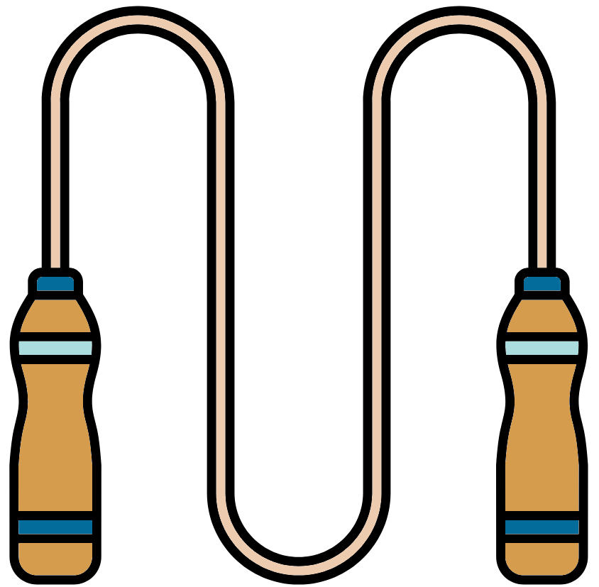

Exercise 1
Ensure you are in the correct directory before carrying out the below commands
cd ~/Linux/- Change the name of the subdirectory 4_exercises_aaaa within your Linux to 4_exercises
mv 4_exercises_aaaa 4_exercises- Make a backup of the 4_exercises directory
cp -r 4_exercises 4_exercises_backup - List the contents of the 4_exercises directory
ls 4_exercises- Within the directory 4_exercises
cd 4_exercisesPrint the working directory
pwd- Print out to screen the phrase ‘the echo command allows me to print phrases to screen’
echo “the echo command allows me to print phrases to screen”- Copy the file copy_this_file.txt to the directory to_me
cp copy_this_file.txt to_me- Rename the directory to_me to you
mv to_me you- Delete the initial copy_this_file.txt file
rm copy_this_file.txtExercise 2

Ensure you are in the correct directory before carrying out the below commands
cd ~/Linux/6_final_exercise- See what files are in the directory
ls- Rename the file 3-P£_CACTTCGA_L001_R1_001.fastq to 3-P3_CACTTCGA_L001_R1_001.fastq
mv 3-P£_CACTTCGA_L001_R1_001.fastq \
3-P3_CACTTCGA_L001_R1_001.fastq- Make a backup of the files in a directory called backup
mkdir backup
cp 1-P1_ATGCCTGG_L001_R1_001.fastq backup/
cp 1-P1_ATGCCTGG_L001_R2_001.fastq backup/
cp 2-P2_AAGGACAC_L001_R1_001.fastq backup/
cp 2-P2_AAGGACAC_L001_R2_001.fastq backup/
cp 3-P3_CACTTCGA_L001_R1_001.fastq backup/
cp 3-P3_CACTTCGA_L001_R2_001.fastq backup/
cp 4-E1_ATTGGCTC_L001_R1_001.fastq backup/
cp 4-E1_ATTGGCTC_L001_R2_001.fastq backup/
cp metadata.txt backup/This can be done a lot quicker with the use of wildcard characters (Covered in Advanced Linux section)
mkdir backup
cp *fastq backup
cp *txt backup- How many reads are in the samples? The below command will give the number of lines in the files, this number can then be divided by 4 (mentally or using a calculator). These values will be the same for the R2 files as they are for the matching R1 file.
wc -l 1-P1_ATGCCTGG_L001_R1_001.fastq \
2-P2_AAGGACAC_L001_R1_001.fastq \
3-P3_CACTTCGA_L001_R1_001.fastqAn advanced method using regular expressions, wildcard characters and grep
grep -c "^@[0-9]*_" *R1*.fastq- Remove the fastq files with no data Check which files have no data
wc \
1-P1_ATGCCTGG_L001_R1_001.fastq 1-P1_ATGCCTGG_L001_R2_001.fastq \
2-P2_AAGGACAC_L001_R1_001.fastq 2-P2_AAGGACAC_L001_R2_001.fastq \
3-P3_CACTTCGA_L001_R1_001.fastq 3-P3_CACTTCGA_L001_R2_001.fastq \
4-E1_ATTGGCTC_L001_R1_001.fastq 4-E1_ATTGGCTC_L001_R2_001.fastq Remove empty files
rm \
4-E1_ATTGGCTC_L001_R1_001.fastq 4-E1_ATTGGCTC_L001_R2_001.fastq- Update the backup files with the previous change
rm backup/4-E1_ATTGGCTC_L001_R1_001.fastq \
backup/4-E1_ATTGGCTC_L001_R2_001.fastq - Check if the 1st read names match in the paired files
head -n 1 \
1-P1_ATGCCTGG_L001_R1_001.fastq 1-P1_ATGCCTGG_L001_R2_001.fastq \
2-P2_AAGGACAC_L001_R1_001.fastq 2-P2_AAGGACAC_L001_R2_001.fastq \
3-P3_CACTTCGA_L001_R1_001.fastq 3-P3_CACTTCGA_L001_R2_001.fastq - Check if the last read names match in the paired files
tail -n 4 \
1-P1_ATGCCTGG_L001_R1_001.fastq 1-P1_ATGCCTGG_L001_R2_001.fastq \
2-P2_AAGGACAC_L001_R1_001.fastq 2-P2_AAGGACAC_L001_R2_001.fastq \
3-P3_CACTTCGA_L001_R1_001.fastq 3-P3_CACTTCGA_L001_R2_001.fastq - In file 1-P1_ATGCCTGG_L001_R1_001.fastq look for sequence headers with the term ‘psychrobacter’
grep “psychrobacter” 1-P1_ATGCCTGG_L001_R1_001.fastq- In the sample 1-P1 remove any fastq entries where the term ‘psychrobacter’ appears in the fastq header. Do this for the R1 and R2 file.
- Using nano use “Ctrl+W” to search for psychrobacter. Then use “Ctrl+K” to cut the lines followed by “Ctrl+W” and “Ctrl+X” to save and exit.
- Using vim with “/” to search for psychrobacter, “dd” to delete lines and “:wq” to save the file and exit it.
- Print to screen the fastq header, sequence and quality data for the 25th sequence in sample 2-P2 for both the R1 and R2 file. Do this with one command. @24_ecoli is grepped as the first sequence is @0_ecoli
grep -A 3 "@24_ecoli" 2-P2_AAGGACAC_L001_R1_001.fastq
grep -A 3 "@24_ecoli" 2-P2_AAGGACAC_L001_R2_001.fastqAdvanced exercise

- Copy the directory ~/Linux/advanced_practice to ~/Linux/advanced_practice_exercise
cp -r ~/Linux/advanced_practice ~/Linux/advanced_practice_exercise- Move into ~/Linux/advanced_practice_exercise
cd ~/Linux/advanced_practice_exercise- Make a directory called fastq and one called txt
mkdir fastq txt- With one command move all the fastq files into the directory fastq
mv *.fastq fastq/- With one command move all the txt files, excluding metadata.txt and samples.txt, into the directory txt.
mv sample_*txt txt/- Create a file in the fastq directory called patient_1_corrected.fastq and put all the corrected fastq data for patient_1 into the file.
cat fastq/sample_[1-2]_*corrected.fastq > \
fastq/patient_1_corrected.fastq- Append the metadata line for sample_1_AAAA from metadata.txt to the bottom of the file sample_1_AAA.txt in the txt directory.
cat metadata.txt | grep "sample_1_AAAA" >> txt/sample_1_AAAA.txt- For all the corrected fastq files find the sequences that start with a stop codon in the forward orientation (i.e. TAG, TAA or TGA). Print out to screen the sample name and sequence info separated by a “:” only (i.e. sample_10_AAGT:TAAGAGAACAATGAACAGATATTAATAATTTTGCCGCTTTTCTGCGGGAT)
grep "^TA[AG]\|^TGA" fastq/*corrected.fastq | \
sed "s/.*sample/sample/" | sed "s/_corrected.fastq//"- Count the number of Gs and Cs within the sequences of file sample_16_AACC.fastq
cat fastq/sample_16_AACC.fastq | grep -B 1 "^+$" | \
grep -v "+\|--" | sed "s/A\|T//g" | wc -c- Get the fastq headers of sequences with homopolymers made of As with a length of 5 or greater for the uncorrected fastq files for samples 8-13 with one command. Then in the same command make the final output of each line in the format of “Sample_13: Sequence 12”
cat fastq/*[3-5]*[AGCT].fastq | grep -B 2 "^+$" | \
grep -B 1 "AAAAA" | grep "^@" | sed "s/^@s/S/" | \
sed "s/_[AGCT]*_/: Sequence /" | sed "s/ 1:$//"